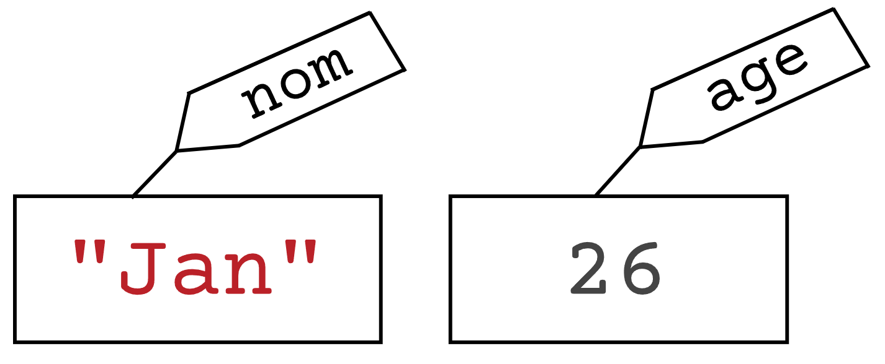

Variables#
Qu'est-ce qu'une variable ?#
On peut décrire une variable comme étant une case mémoire de votre ordinateur possédant un nom et étant capable de stocker une valeur. De manière plus imagée. on peut visualiser une variable comme étant une boîte à chaussures contenant un objet et sur laquelle est collée une étiquette nommant son contenu. Une variable permet alors d'enregistrer des informations dans un programme.On peut par exemple imaginer un programme dans lequel le prénom et l'âge de l'utilisateur devraient être enregistrés. Ce programme devrait alors contenir deux variables qui peuvent être représentées comme ceci :

Nous avons ici en effet une boîte étiquetée nom contenant un nom de famille, et une boîte avec l'étiquette age contenant une valeur correspondante. Il est important de noter qu'une variable ne peut contenir qu'une seule valeur, et que, pour enregistrer deux informations différentes, il faut alors deux variables. En Python, on peut créer une variable en suivant la syntaxe suivante :
nom_de_la_variable = valeur
Ainsi, en Python, on peut créer ces deux variables de la manière suivante :
nom = "Jan"
age = 32
Types de valeur#
Les deux variables que nous venons de créer ont chacune un type différent. En effet, l'une contient du texte, alors que l'autre contient un nombre entier. En Python, on distingue 4 types de données primitifs.
int. De son nom complet integer, le typeintpermet de représenter les nombres entiers. Par exemple :1,2,3,999,-10, ou-376.float. Les flottants représentent les nombres réels. Par exemple :3.14,4.5,-8.555, ou1000.001. Attention, vous avez sûrement l'habitude en français d'appeler les réels des nombres à virgules. Pourtant, en Python, il ne faut pas mettre une virgule pour séparer les unités des décimales, mais bien un point.str. Signifiant en anglais string, le typestrpermet de représenter des chaînes de caractères, ou, dit plus simplement, du texte. Les chaînes de caractères doivent toujours être entourées d'une paire de guillemets doubles ou simples. Par exemple :"Bonjour",’Ceci est une chaîne de caractères’, ou"QUOI ???".bool. Le type booléen n'a que deux valeurs possibles :TrueetFalse. Ce type de valeur est utilisé lorsque l'information que vous souhaitez enregistrer ne peut avoir que deux états. Intuitivement, on peut utiliser le typeboollorsque cette information peut être vraie ou fausse (par exemple une variablereponsequi aurait la valeurTruesi la réponse à une question est vraie, etFalsesinon). Toutefois, n'importe quelle information à deux états peut être représentée de cette manière : c'est alors au programmeur de décider quel état estTrueet lequel estFalse. On peut s'imaginer une variableetat_portequi estTruelorsque la porte est ouverte, et qui estFalsequand la porte est fermée.
Le programme ci-dessous permet ainsi de créer des variables de chacun de ces types.
code_postal = 1700
latitude = 46.80237
ville = "Fribourg"
est_un_chef_lieu = True
Expressions#
Pour le moment, nous avons assigné des valeurs littérales à nos variables. C'est-à-dire que nous avons directement écrit la valeur finale lui sera attribuée. Nous pouvons toutefois faire d'autres opérations plus intéressantes et assigner aux variables le résultat de calculs. En programmation, nous ne les appelons toutefois pas calculs, mais expressions. De plus, on ne dit pas que l'on résout une expression, mais on l'évalue. En Python, les opérateurs arithmétiques que l'on peut utiliser dans les expressions sont les suivants.
Opérateur d'addition +
Entre deux
intoufloat, les deux nombres sont additionnés. Par exemple10 + 6.15est évalué à16.15.Entre deux
str, les deux chaînes de caractères sont concaténées, c'est-à-dire qu'elles sont collées ensemble. Par exemple"Bonjour" + "Au revoir"est évalué à"BonjourAu revoir".
Opérateur de soustraction - : soustrait un
intou unfloatà un autre. Par exemple,99.9 - 10.9est évalué à89.0.Opérateur de multiplication
Entre deux
intoufloat, les deux nombres sont multipliés. Par exemple,2.5 * 4est évalué à10.0.Entre un
stret unintla chaîne de caractères est répétée autant de fois que le nombre donné. Par exemple,"AB" * 3est évalué à"ABABAB".
Opérateur de division / : Divise un
intou unfloatpar un autre. Par exemplte5 / 2est évalué à2.5.Opérateur d'exponentiation * : Elève un
intoufloatà la puissance d'un autre. Par exemple,3 ** 3est évalué à27.Opérateur modulo % : donne le reste de la division entière entre deux
intoufloat. Ainsi11 % 2est évalué à 1, car la division entière de 11 par 2 donne 5 et il reste 1.
De plus, au lieu d'utiliser des valeurs littérales dans les expressions, on peut également utiliser des variables préalablement définies. Voici ci-dessous un exemple d'un programme Python utilisant plusieurs expressions. Sans l'exécuter sur Thonny et sans lire l'explication qui suit, essayez de réfléchir à son déroulement et à deviner le contenu de chaque variable à la fin de son exécution.
prix = 3 * 2 + 4
nombre = 12 - 2 ** 3 - 2
total = prix * nombre
nombre = nombre + 1
txt = "?" * nombre
Opérateurs d'affectation combinée#
Lorsque l'on crée une variable, le signe d'égalité que l'on utilise est appelé opérateur d'affectation. Cet opérateur peut être utilisé non seulement lors de la création d'une variable, mais aussi, comme nous l'avons vu, pour modifier sa valeur plus tard. Dans l'exemple ci-dessous, on assigne la valeur "Bonjour" à la variable salutations et on lui ajoute la suite plus tard. De manière similaire, la variable prix est initialisée à 8.5 et sa valeur est doublée par la suite.
salutations = "Bonjour"
prix = 8.5
salutations = salutations + ", comment allez-vous ?"
prix = prix * 2
Ce genre d'instruction permettant de modifier la valeur de variables est très courant en programmation. De ce fait, même si ces lignes ne sont pas très compliquées, la flemmardise des programmeurs a donné naissance à une manière plus courte de les écrire en utilisant des opérateurs d'affectation combinée. Ceux-ci permettent de modifier la valeur d'une variable sans recopier son nom deux fois. Pour chaque point de la liste suivante, imaginons que nous avons une variable n contenant la valeur 10.
Opérateur d'incrémentation += : Ajoute une valeur à la variable. Après avoir exécuté l'instruction
n += 5, alorsncontiendra la valeur15.Opérateur de décrémentation -= : Retire une valeur à la variable. Après avoir exécuté l'instruction
n -= 3, alorsncontiendra la valeur7.Opérateur = : Multiplie la variable par une valeur. Après avoir exécuté l'instruction
n *= 2, alorsncontiendra la valeur20.Opérateur /= : Divise la variable par une valeur. Après avoir exécuté l'instruction
n /= 5, alorsncontiendra la valeur2.Opérateur *= : Mets la variable à la puissance d'une valeur. Après avoir exécuté l'instruction
n **= 2, alorsncontiendra la valeur100.Opérateur %= : Remplace le contenu de la variable par le reste de la division entière entre sa valeur et une autre. Après avoir exécuté l'instruction
n %= 3, alorsncontiendra la valeur1.
Ainsi, le précédent exemple peut se réécrire de la manière suivante
salutations = "Bonjour"
prix = 8.5
salutations += ", comment allez-vous ?"
prix *= 2